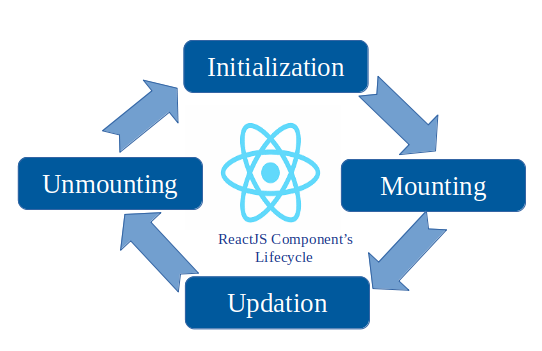

Q. 1 Explain Life cycle in Class Component and functional component with Hooks
A React Component undergoes three phases in its lifecycle
1). Initialization
2). Mouting
3). Update
4). Unmouting
when a new object is created from the class. Initializing the state within the constructor function
allows the state object to be created before React renders the component.
2). Mouting: Mouting is a phase when a new component is created and inserted in DOM.
The componentDidMount lifecycle method executes once after initial rendering. If an empty dependency array is provided as the second argument,
the callback function executes only after initial rendering
3). Updating: It's a phase when component update or re-renders..
componentDidUpdate is a lifecycle method in React that is called after a component has been updated and re-rendered. By default,
it executes after every render, including the initial rendering.
If a dependency array is provided, it will execute during the initial rendering and whenever any of
the specified values in the array change
4). Unmouting: Unmouting is the process when data can be remove from DOM.
The componentWillUnmount lifecycle method executes when the component is unmounted. If a function is returned from the call function,
that function executes when the component is unmounted.

< /div>